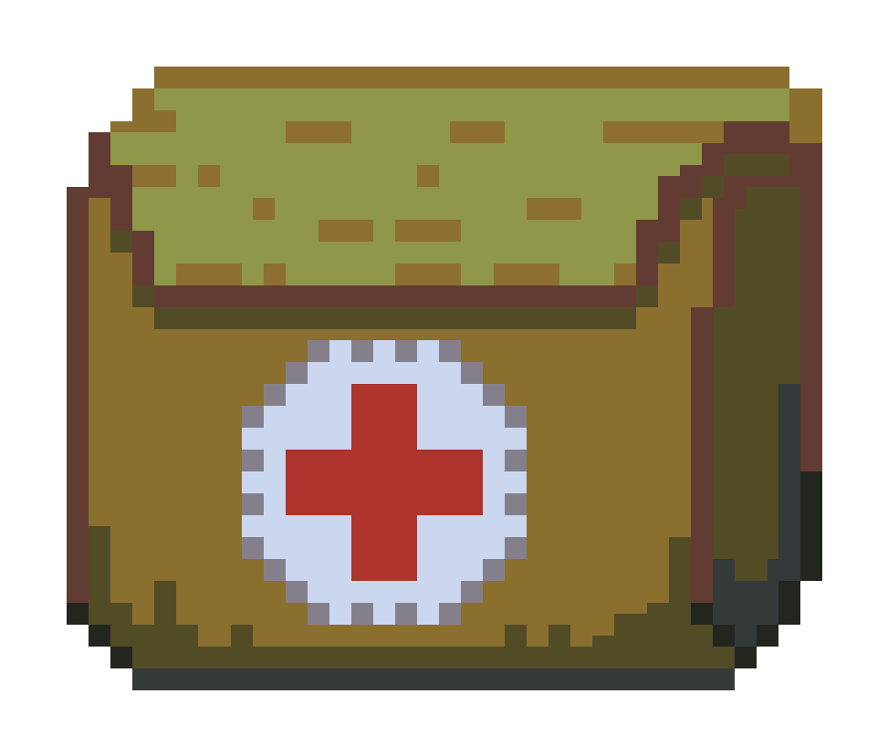
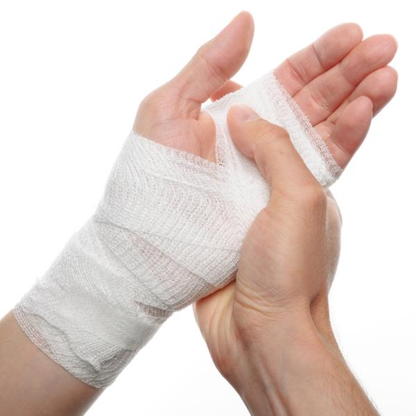
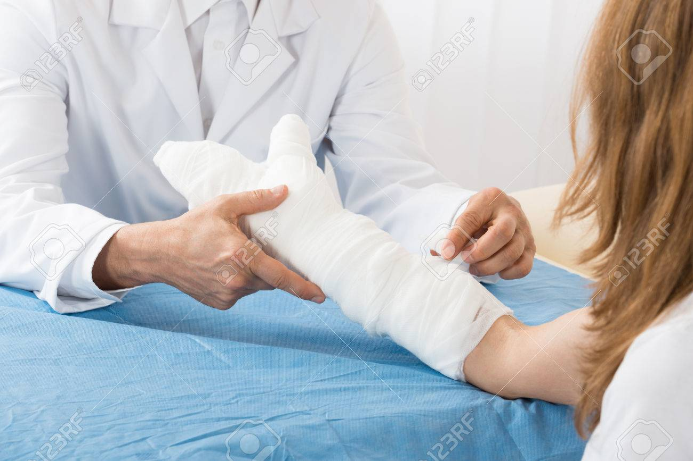

KỸ NĂNG SƠ CỨU VẾT THƯƠNG
Cách sơ cứu khi chảy máu như thế nào cho đúng cách rất quan trọng, vì việc này có thể ảnh hưởng trực tiếp đến tính mạng của người bị thương. Có rất nhiều nguyên nhân gây ra tình trạng các vết thương bị chảy máu như: do đóng đinh, giẫm đạp vật nhọn hoặc trong khi làm việc thiếu cẩn thận… Đặc biệt trong các môi trường nguy hiểm thì nguy cơ xảy ra vết thương chảy máu càng cao hơn. Thông thường y khoa chia thành 2 dạng phổ biến là chảy máu trong và chảy máu ngoài, nếu không biết cách sơ cứu khi chảy máu mỗi dạng có thể dẫn đến nhiều biến chứng rất nặng ảnh hưởng xấu đến sức khỏe. 1. Sơ cứu vết thương chảy máu: Sơ cứu chảy máu ngoài  Chảy máu ngoài là tình trạng mà bất kì ai cũng có thể gặp phải. Cách nhận biết chảy máu ngoài Chảy máu ngoài rất dễ nhận biết, đó có thể là khi bạn sơ ý để da bị những vết cắt như đứt tay, trầy xước khi cạo râu. Điều này vô tình đã làm các mạch máu dưới da bị tổn thương gây chảy máu. Đôi khi việc chảy máu có lợi vì lượng máu chảy ra giúp làm sạch vết thương. Tuy nhiên, chảy máu quá nhiều có thể khiến cơ thể bạn bị sốc. Bạn không thể đánh giá mức độ nghiêm trọng của một vết cắt hoặc vết thương bởi số lượng máu chảy ra. Một số thương tích nghiêm trọng chảy máu rất ít. Mặt khác, những vết cắt trên đầu, mặt và miệng có thể chảy rất nhiều máu bởi vì những vùng này chứa khá nhiều mạch máu. Cách sơ cứu khi bị chảy máu: Nguyên tắc sơ cứu chảy máu ngoài  1.1. Trường hợp vết thương nhẹ chảy máu ít Trong nhiều trường hợp, các vết xước do cạo râu, vết thương do kim may có thể dẫn đến tình trạng chảy máu. Đối với các thương tích nhẹ như vậy, bạn vẫn nên thực hành sơ cứu cầm máu. Một chiếc băng cá nhân (băng dán vết thương) đã được khử trùng và các tuýp thuốc có chứa chất neosporin khá hữu ích trong việc ngăn ngừa nhiễm trùng và điều trị những vết thương nhẹ. Nguyên tắc sơ cứu vết thương chảy máu: Rửa tay sạch trước và sau khi sơ cứu chảy máu Rửa vết thương bằng nước sạch, có thể rửa dưới vòi nước máy Nếu là vết thương nhẹ như xước da chỉ có máu rỉ ra thì để hở cho khô. Nếu máu chảy nhiều hơn thì đặt miếng gạc lên vết thương và băng lại hoặc dùng băng keo băng kín. Bạn không nên chủ quan với những vết thương nhỏ, chỉ một vết cắt đôi khi có thể ảnh hưởng tới các mạch máu. Nếu máu vẫn còn chảy sau 20 phút, bạn cần đến bệnh viện ngay. 2.1. Trường hợp vết thương chảy máu khẩn cấp Những vết thương do các loài động vật gây ra hay bị những vật nhọn đâm sâu hoặc vết thương chảy máu liên tục từ 15 đến 20 phút sau khi sơ cứu khi bị chảy máu thường là những trường hợp chảy máu khẩn cấp. Khi một người bị chảy máu rất nhiều, hãy theo dõi các triệu chứng của sốc. Nếu nạn nhân có các biểu hiện như da lạnh, da bị sưng, nhịp tim suy yếu và mất ý thức thì rất có thể nạn nhân sẽ bị sốc vì mất máu. Ngay cả trong trường hợp lượng máu chảy ra chỉ ở mức trung bình thì người bị chảy máu vẫn có thể cảm thấy lâng lâng hoặc buồn nôn. Nguyên tắc sơ cứu khi bị chảy máu: Rửa tay trước và sau sơ cứu khi chảy máu. Xác định vị trí nơi chảy máu để xử lý đúng phương pháp. Nói nạn nhân hoặc nhân viên cấp cứu dùng các ngón tay ép chặt lên hai mép vết thương ít nhất 5 – 10 phút để cầm máu. Đặt nạn nhân nằm xuống. Nếu vết thương ở tay hay chân, gác tay hoặc chân lên cao hơn so với tim đồng thời tay bạn vẫn ép chặt vết thương để cầm máu. Điều này sẽ giúp máu lưu thông đến các cơ quan quan trọng trong khi bạn chờ đợi để được giúp đỡ. Phủ vết thương bằng miếng gạc sạch rồi băng lại, đừng băng chặt quá làm tắc nghẽn lưu thông máu. Kiểm tra lại, nếu thấy máu còn chảy thấm qua lớp băng thì đặt thêm miếng gạc nữa rồi băng phủ lên, không được tháo lớp băng đầu ra. Nếu băng ở các chi, phải thường xuyên kiểm tra các ngón xem màu da có hồng và có ấm không, nếu da các ngón tái tím và lạnh thì phải nới lỏng băng để máu lưu thông. Nếu có dấu hiệu sốc như xanh tái, mệt, lạnh, nhớp nháp mồ hôi thì phải chống sốc. 2. Sơ cứu khi chảy máu: Sơ cứu chảy máu trong  Chảy máu trong được định nghĩa là tình trạng chảy máu không quan sát được từ bên ngoài cơ thể. Cách nhận biết chảy máu trong Chảy máu trong thường khó phát hiện hơn so với chảy máu ngoài và nếu để lâu thì có thể xảy ra những biến chứng rất nguy hiểm. Vì vậy khi xảy ra tai nạn, trước tiên bạn cần xác định rõ xem nạn nhân chảy có bị máu trong hay không để kịp thời xử lý. Thường thì người bị xuất huyết trong sẽ có các biểu hiện như nôn ói, đờm… Vết thương ở các vùng bụng và ngực thường khá nghiêm trọng vì các cơ quan nội tạng bị ảnh hưởng, có thể gây ra chảy máu bên trong cũng như sốc. Các vết thương ở ngực và bụng được coi là trường hợp khẩn cấp. Vì thế, bạn nên đưa nạn nhân đến các trạm y tế gần nhất càng sớm càng tốt, nhất là khi nạn nhân có các triệu chứng sốc như chóng mặt, yếu đuối, da nhợt nhạt và lạnh, khó thở, tăng nhịp tim… Nguyên tắc sơ cứu chảy máu trong Trong trường hợp này, người bệnh cần được đặt ở tư thế thoải mái, tránh việc di chuyển và đụng chạm đến vết thương. Không được bôi thuốc hoặc chất sát trùng trực tiếp lên vết thương. Sau đó, hãy đưa bệnh nhân đến bệnh viện gần nhất để tránh các trường hợp biến chứng nặng hơn có thể xảy ra. Trước khi bắt đầu sơ cứu vết thương chảy máu, bạn nên xác định mức độ nghiêm trọng của vết thương một cách cẩn thận. Có một số tình huống mà bạn không nên thực hiện bất kỳ loại sơ cứu khi bị chảy máu nào cả. Sau khi vết thương đã được sơ cứu cầm máu và băng bó cẩn thận, bạn cần theo dõi để đảm bảo rằng vết thương đang dần lành lại và tránh tình trạng nhiễm trùng. Một chất dịch hoặc mủ chảy ra từ vết thương đôi khi có thể là dấu hiệu của nhiễm trùng. Bạn cần đi khám ngay nếu thấy cơ thể bị sốt hoặc bắt đầu thấy đau nhức khi chạm vào vết thương. Các vết thương chảy máu có thể để lại hậu quả rất lớn nếu không xử lý kịp thời và đúng cách. Với những bước sơ cứu khi bị chảy máu trên đây, hy vọng bạn đã có được những kiến thức cần thiết cho mình để xử lý trong những tình huống tai nạn khẩn cấp.